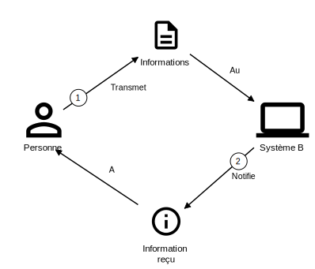
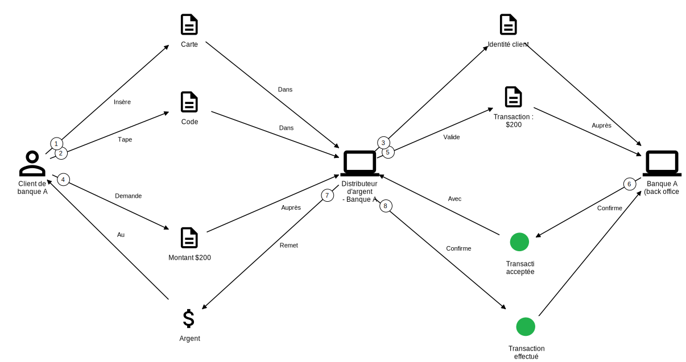
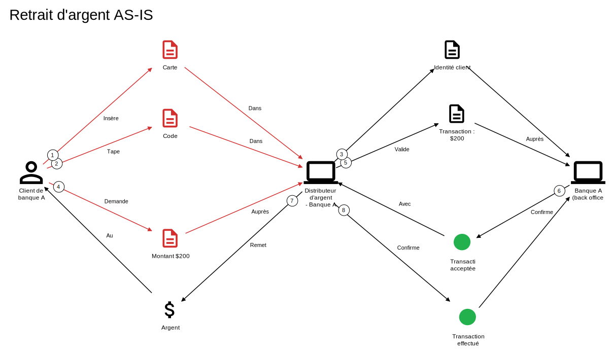
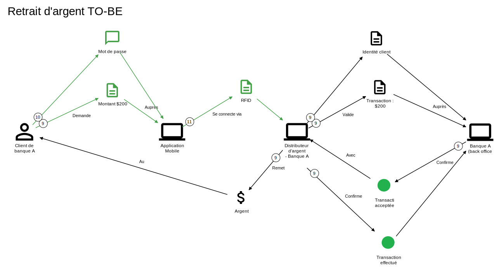

Domain Storytelling
Pour modéliser les processus métier - interactions entre personnes et systèmes - 3 éléments suffisent
3 patterns sont utilisés pour définir un processus: échanges d'information (données, documents, fichiers, etc.) entre:
- Personne et Personne

- Personne et Système

- Système et Système
N'utilisant que 3 évènements: 2 acteurs personne ou système, 1 objet: information échangée
Prenons l'exemple d'un retrait d'argent

Il s'agit donc de parcourir une histoire - comme pour Event Modeling - une seule histoire et que ce soit un exemple: qui sont les personnes? Soyez précis
Nous pouvons ensuite analyser les problèmes de performance, les faiblesses de l'expérience utilisateur, voire découvrir une gap en regardant le processus existant

Et imaginer le future, la cible en revoyant les connections, vers une meilleure expérience utilisateur, un nouveau business model, etc

Champs d'application: dès qu'il y a des échanges
Et la vie est faite d'échanges
- Développement logiciel: c'est le but initial de l'outil, dans le cadre du Domaine Driven Design (DDD) donc la capture des besoins
- Phase amont de l'analyse Métier: vous voulez comprendre comment les métiers travaillent, l'outil est parfait
- Sélection/Identification d'un progiciel: en quelques séances vous capturez les processus métier, le jargon et le contexte: il est ainsi plus facile de sélectionner des progiciels qui répondraient aux besoins métier
- Architecture d'entreprise: pour découvrir l'architecture qui sont des échanges entre personnes et systèmes. Mapper, Décvourer avec Domain Storytelling puis documenter formellement dans l'outil de l'AE (archimate, C4)
- Evolutions (nouvelles fonctionnalités): pour comprendre un changement demandé par le métier dans le contexte d'un systpme existant
- Spécifications (RFP): pour les comprendre (fournisseur) ou pour donner le contexte (client)
- Rétrospectives: permet de comprendre le processus de développement, des goulets d'étranglement et des points de douleur
- Tout processus: au sense large, pour comprendre un processus qui n'est pas forcément I.T.
Comment ça marche?
Attrapper une histoire avec un métier
- Attention: bien préparer la 1ère séance...
- Les participants: (en fonction du contexte), les personnes qui ont les conaissances métier et les personnes qui ont besoin d'acqurir ces connaissances
- Même avec une seule personne métier - votre co-pilote: si vous avez besoin de comprendre le contexte en amont, vous préparer
- Les premières minutes: demander d'expliquer au métier - la personne qui sera votre co-pilote - leur(s) domaine(s) métier, dans le but de partir sur un processus - 3 à 5 minutes
- Dès que vous avez identifié un processus avec eux: Vous commencez à dérouler ce processus à la volée grâce à l'outil egon.io ou stickers sur le mur - Les discussions sont entre vous et la personne métier
- Rejouer le processus: rejouer le processus pour vous assurez de votre compréhension
- Prendre un nouveau processus: après une pause. Si un atelier dure 2 heures, essayez de faire une pause au bout d'une heure. Le premier processus est toujours plus difficile
Les dangers?
2 types de disruption
- Les participants: il faut que cela soit une discussion - et une seule - entre la personne métier et le facilitateur (personne qui a l'outil en main). Beaucoup de concentration est nécessaire à ce dernier pour bien mapper l'histoire. Le métier peut diverger très rapidement: reprenez toujours l'histoire qui ne va que dans une seule direction, l'objectif est de connaitre la fin de l'histoire
- L'outil: la prise en main pour être "fluent" nécessite de la pratique, et encore de la pratique. Le métier ne doit pas vous suivre. C'est vous qui devez le suivre dans son histoire. Donc ne les ralentissez pas à cause d'un manque de pratique de l'outil
Les retours
"!"
- Les participants: nous sommes surpris à quel point ils sont pris par le jeu, et par le visuel (et la numérotation des flèches). Le métier peut diverger de l'histoire très rapidement: reprenez toujours l'histoire qui ne va que dans une seule direction, l'objectif est de connaitre la fin de l'histoire.
- L'outil: permet d'avoir une documentation très riche. L'aspect visuel permet de mieux se rappeler des conversations, des histoires. L'IA peut générer des user stories et spécifications.
- Vu: des clients qui ne veulent plus voir de post-is...
- Pour le pilote: c'est prenant et stimulant. Beaucoup d'énergie est nécessaire donc ne pas surpris si vous êtes fatigué avec un atelier
- Documentation: les modèles sont très riches mais il se peut que des documents Word vous soient demandés... Demandez à l'IA !